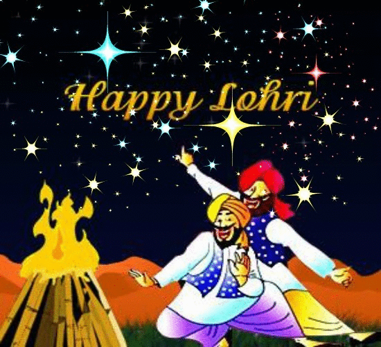
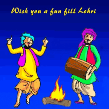
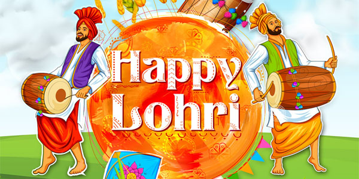
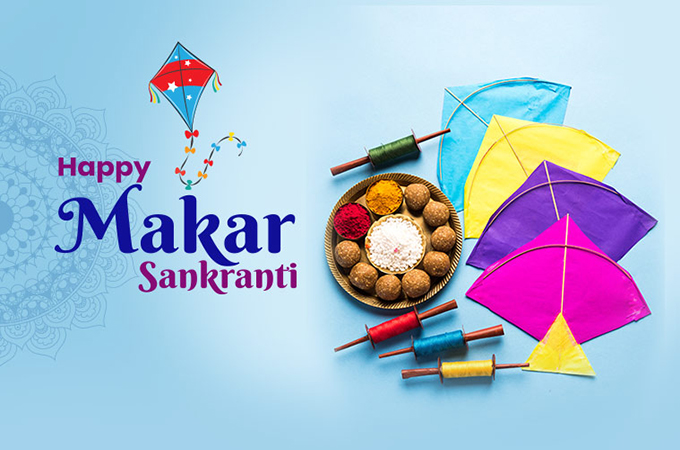

Lohri ( Gurmukhi: ਲੋਹੜੀ, Shahmukhi: لوہڑی, Devanagari: लोह्ड़ी) is a popular Punjabi winter folk festival celebrated primarily in the Punjab region.
The significance and legends about the Lohri festival are many and these link the festival to the Punjab region.
It is believed by many that the festival commemorates the passing of the winter solstice.
Lohri marks the end of winter, and is a traditional welcome of longer days and
the sun's journey to the northern hemisphere by Sikhs and Hindus in the Punjab region of the Indian subcontinent.
It is observed the night before Makar Sankranti, also known as Maghi,
and according to the solar part of the lunisolar Bikrami calendar and typically falls about the same date every year (January 13).
For more Click on below Link or picture
Lohri Festival History

Mail to-Arjun Dubey
